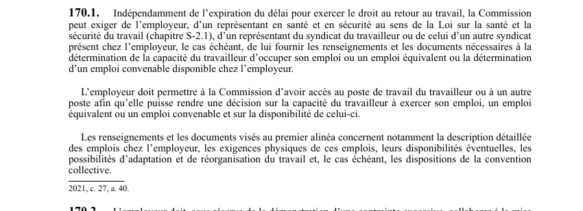

art-170.1-LATMP : renseignements et accès exigés par la Commission
La Commission peut réclamer l'information et l'accès au milieu de travail dont elle a besoin pour statuer sur la capacité du travailleur, même une fois le délai du droit au retour au travail expiré.
- Personnes tenues de fournir les renseignements et documents : l'employeur, le représentant en santé et en sécurité au sens de la LSST et le représentant syndical du travailleur ou celui d'un autre syndicat présent chez l'employeur.
- Finalité : déterminer la capacité d'occuper l'emploi ou un emploi équivalent, ou repérer un emploi convenable disponible chez l'employeur.
- L'employeur doit en outre donner à la Commission accès au poste de travail du travailleur ou à un autre poste, pour qu'elle décide de cette capacité et de la disponibilité de l'emploi.
- Contenu attendu : description détaillée des emplois, exigences physiques, disponibilités éventuelles, possibilités d'adaptation et de réorganisation du travail et, s'il y a lieu, dispositions de la convention collective.
- Aucun délai chiffré dans l'article : c'est justement l'expiration du délai du droit au retour au travail qui ne fait pas obstacle à ces demandes.
🌐 LegisQuébec · 📄 PDF officiel (page 45)
Texte officiel
Indépendamment de l’expiration du délai pour exercer le droit au retour au travail, la Commission peut exiger de l’employeur, d’un représentant en santé et en sécurité au sens de la Loi sur la santé et la sécurité du travail (chapitre S-2.1), d’un représentant du syndicat du travailleur ou de celui d’un autre syndicat présent chez l’employeur, le cas échéant, de lui fournir les renseignements et les documents nécessaires à la détermination de la capacité du travailleur d’occuper son emploi ou un emploi équivalent ou la détermination d’un emploi convenable disponible chez l’employeur.
L’employeur doit permettre à la Commission d’avoir accès au poste de travail du travailleur ou à un autre poste afin qu’elle puisse rendre une décision sur la capacité du travailleur à exercer son emploi, un emploi équivalent ou un emploi convenable et sur la disponibilité de celui-ci.
Les renseignements et les documents visés au premier alinéa concernent notamment la description détaillée des emplois chez l’employeur, les exigences physiques de ces emplois, leurs disponibilités éventuelles, les possibilités d’adaptation et de réorganisation du travail et, le cas échéant, les dispositions de la convention collective.
Texte de l’article 170.1 LATMP, extrait de la couche texte du PDF officiel (page 45), sans OCR ni retouche. La capture ci-dessous et le PDF font foi.
{kind=link}

Toucher l'image pour l'agrandir🔗 Ouvrir a cette page : LATMP.pdf : page 45 · texte a jour au 20 février 2024
Voir aussi
Pages qui pointent ici (4)
- art-170-LATMP : emploi convenable disponible chez l'employeur Recueil législatif
- art-170.2-LATMP : obligation de collaboration de l'employeur Recueil législatif
- art-170.3-LATMP : présomption de capacité de réintégration Recueil législatif
- art-170.4-LATMP : sanction pécuniaire du refus de réintégration Recueil législatif